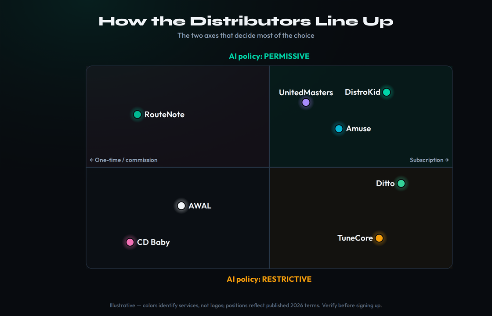
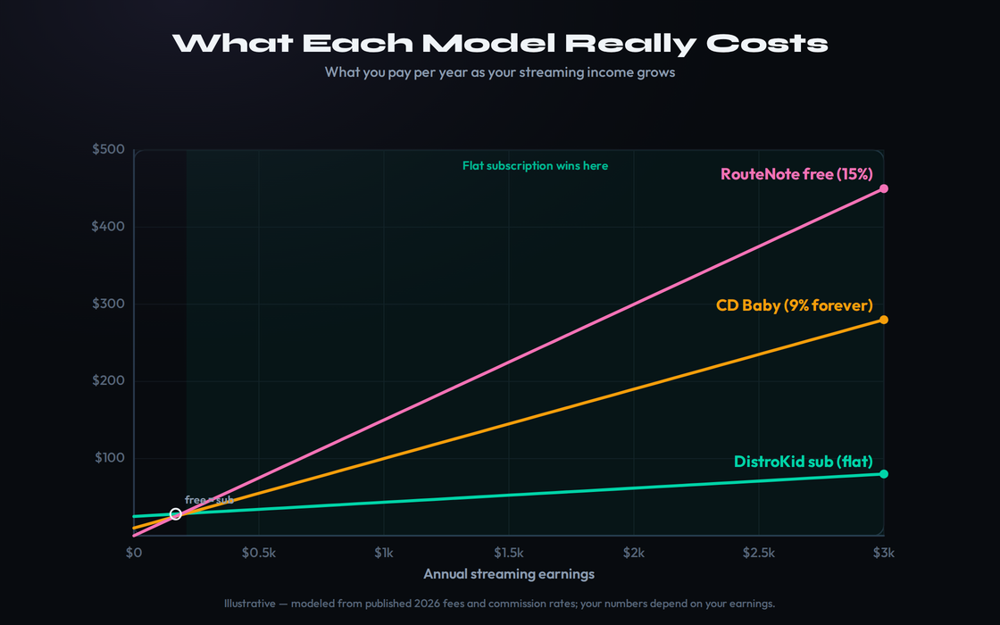
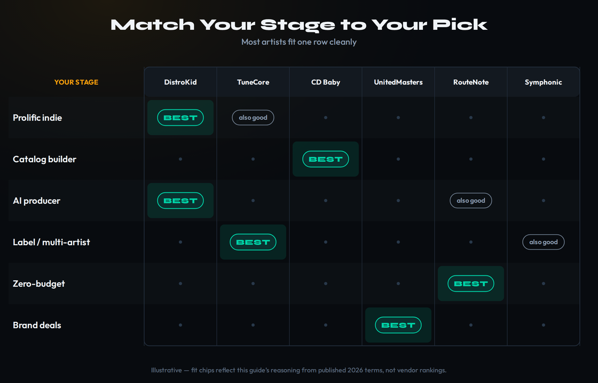

There is no single best music distributor — there is a best one for your stage, because every service puts your music on the same stores for the same per-stream rate. What actually differs is fees, permanence, AI policy, hidden costs, and who owns the company. Best overall / fastest: DistroKid ($24.99/yr, unlimited, keep 100%). Best value for occasional releasers: CD Baby (one-time $9.99 single / $14.99 album, permanent, but a 9% cut forever). Best for AI music: DistroKid or RouteNote — the most permissive; avoid CD Baby and TuneCore, which reject fully-AI tracks. Best for permanence: CD Baby or Ditto (no takedown-on-lapse). Best for labels / multiple artists: TuneCore or Symphonic. Best zero-upfront: RouteNote free (15% cut). Best for brand deals: UnitedMasters. Most artists need exactly one of these — choose by how often you release and whether you ever plan to stop paying.
This article contains affiliate links. If you buy through them we may earn a commission at no extra cost to you. It does not affect our picks — every recommendation here is chosen on merit, and where the honest answer is “the cheaper service is the right one,” we say so. Pricing and AI policies were verified in June 2026 and both move constantly in this category; always confirm the current number on the vendor’s own page before you sign up.
Every roundup of music distributors online crowns DistroKid, lists five competitors, and stops. That is not a decision framework — it is an affiliate listicle. The truth that the affiliate-driven posts skate past is the one that should drive your whole choice: the distributor is a pipe, not a pricing lever. An artist earning $1,000 a year on Spotify earns the same $1,000 of streaming royalty whether the song was delivered by DistroKid, TuneCore, CD Baby, or anyone else. The per-stream rate is set by the platform, not by your distributor. So the real comparison is never “who pays more” — it is who takes the smallest bite out of that fixed pool in fees and commission, who lets you keep your catalog if you stop paying, who will accept the kind of music you actually make, and who owns the company holding your data.
That reframing changes everything. Once you accept that the income is fixed, the question stops being “which distributor is best” and becomes “which fee model loses me the least money, given how often I release and how long I plan to keep my music online.” A prolific artist and a once-a-year hobbyist should make opposite choices, and a producer releasing AI-generated tracks has to rule out two of the biggest names before pricing even enters the conversation. This guide ranks distributors by stage, not by a single winner, and it wires the decision into the rest of the path — registering with a PRO, collecting your mechanicals, copyrighting your work — so you leave knowing the whole route, not just where to click. If you want the conceptual grounding first, our explainers on how to distribute music and music distribution explained cover the mechanics; this page is the decision.
How to Actually Choose (the four axes that matter)
Before any logos, settle the four questions that decide which distributor is right for you. Almost every feature comparison you will read online is noise layered on top of these four axes; get them straight and the choice nearly makes itself. The map below places the major distributors against these axes — but the axes matter more than the map, so read these first.
Axis 1 — Release frequency. How many songs will you put out in a year? This single number decides whether a subscription or a per-release model is cheaper for you, and it is the axis people get wrong most often. A subscription like DistroKid charges the same flat fee whether you release one track or fifty, so the more you release, the cheaper each release effectively becomes. A per-release service like CD Baby charges every time you upload, so it stays cheap for someone who drops one single a year and becomes expensive for someone releasing monthly. If you do not yet know your own rhythm, be honest about the next twelve months rather than the version of yourself you wish you were — most artists release far less than they plan to.
Axis 2 — Fees versus permanence. This is the trade nobody explains clearly, and it is the one that traps people. There are three fee models, and each makes a different promise about what happens when you stop paying. A subscription distributor (DistroKid, TuneCore, Ditto, Amuse, UnitedMasters) is the cheapest year to year and lets you keep 100% of your royalties — but it is a lease. Stop paying and, depending on the service, your music is removed from every store within weeks, taking your streams, saves, playlist placements, and algorithmic momentum with it. A one-time distributor (CD Baby) charges once per release and keeps it live permanently — but it takes a 9% commission forever in exchange. A commission distributor (RouteNote free, UnitedMasters free) charges nothing upfront but skims a percentage of everything you earn, for as long as you earn it. There is no free lunch here: you are choosing whether to pay with a renewal, a permanent cut, or a takedown risk.
The permanence question has a second, newer dimension in 2026: who owns your distributor. The independent-distribution space has consolidated hard. CD Baby is now owned by Universal Music Group, after UMG completed its acquisition of Downtown Music Holdings — which also swept in FUGA and Songtrust — in February 2026. AWAL has been owned by Sony Music since 2021. TuneCore is owned by Believe, a publicly traded major that also runs its own competing label-services division. DistroKid has been widely reported to be exploring a sale valued around $2 billion. Only a handful of established names — RouteNote, Ditto, Horus Music — remain genuinely founder-owned. This matters because your distributor holds your catalog, your earnings, and your listener data, and when its parent company is a major label, that data flows into the same machine that decides which trends to chase and which independent artists to sign. It is not a reason to panic, but it is a real axis, and the affiliate posts never mention it.
Axis 3 — AI policy. If you make AI-generated or heavily AI-assisted music, this axis comes first, because it disqualifies two of the biggest names before price matters at all. As of 2026 the field splits cleanly. The permissive camp — DistroKid, RouteNote, UnitedMasters, Symphonic, LANDR, Amuse — will distribute AI music provided you disclose it and own the rights. The restrictive camp is led by CD Baby and TuneCore, both of which reject fully AI-generated works; they accept AI-assisted tracks only where a human is clearly the primary creative force. Every major distributor now passes an AI-disclosure flag downstream to Spotify and Apple, and Spotify has already removed tens of millions of tracks it judged to be AI spam, so honest disclosure is not optional — undisclosed AI that trips detection gets pulled, and repeat offenses can suspend your whole profile. We cover this in depth below and in our guide to releasing AI music; if you are unsure where you stand legally, start with is AI music legal.
Axis 4 — Hidden costs. The headline price is almost never the real price. On a subscription distributor the line item that quietly inflates is the per-release add-on: DistroKid charges $29 per single (or $49 per album) for “Leave a Legacy,” the fee that keeps a release live if you ever stop paying, plus $4.95 a year per single for YouTube Content ID — on which it also keeps 20% of the revenue — and $7.95 a year per release for Store Maximizer. Stack those across a growing catalog and the “$24.99 a year” service can cost several hundred dollars annually. On a commission distributor the hidden cost is the commission itself, which feels like nothing at $50 a month of streaming and becomes punishing at $2,000 a month. The honest way to compare is total cost of ownership at your realistic release volume and earnings — not the number on the pricing page. The cost-over-time chart further down does exactly this.

The two axes that decide most of the choice: fee model and AI policy. Positions reflect each service’s published 2026 terms. Illustrative — colors identify services, not logos; verify current pricing and policy before signing up.
The Fee-Model Truth (subscription vs one-time vs commission)
Spend a minute on the three fee models in detail, because choosing the right one is worth more than choosing the right brand. They are not interchangeable, and the cheapest one on paper is rarely the cheapest one for your situation.
A subscription is the dominant model and the right default for most working artists. You pay a flat annual fee — typically $20 to $25 for the entry tier — upload as much as you like, and keep 100% of your streaming royalties. The economics get better the more you release and the more you earn, because the fee never scales with either. The catch is the lease structure: your catalog stays online only while the subscription is active. For an artist who intends to keep releasing and keep paying, this is plainly the best value, which is why DistroKid and the unlimited TuneCore plans dominate the active-artist segment. The risk is purely the exit — if life forces you to stop paying, an un-protected catalog comes down.
A one-time fee is CD Baby’s model and the right answer for a specific kind of artist: someone who releases infrequently, values permanence, and does not want a recurring bill. You pay once per release — $9.99 for a single, $14.99 for an album — and the music stays up forever with no renewals. In exchange, CD Baby keeps 9% of your download and streaming revenue for the life of the release. For a hobbyist with a handful of songs that earn modestly, that 9% is trivial and the permanence is priceless. For an artist whose catalog earns real money, that 9% compounds into far more than a subscription would ever have cost. The model rewards low earners who want to set-and-forget and punishes high earners who stay.
A commission model — RouteNote’s free tier, UnitedMasters’ old free tier — charges nothing upfront and takes a percentage (commonly 15%) of everything you earn, indefinitely. It looks like the best deal in the world to a beginner with no income, and for genuinely testing the waters it can be. But the math turns ugly fast: an artist earning $500 a month on a 15% free tier pays $900 a year in commission, which is more than ten times the most expensive flat subscription. “Free” is only free while you earn nothing. The moment you have meaningful streams, a paid subscription with 0% commission is dramatically cheaper, and the smart move is to start free and migrate the instant your earnings cross the break-even line.
It helps to see the break-even in real numbers, because the abstractions hide how quickly the models diverge. Picture an artist with a small but growing catalog earning $1,000 over a year. On DistroKid they pay $24.99 and keep the full $1,000. On a TuneCore unlimited plan, the same: $24.99, full $1,000. On CD Baby’s one-time model they paid roughly $10 upfront but surrender 9% — $90 — so they net $910, and that 9% recurs every year the music keeps earning. On RouteNote’s free 15% tier they net $850, with that cut also recurring. At $1,000 a year the differences are modest; at $10,000 a year the commission models cost $900 and $1,500 respectively while the subscriptions still cost $25. The lesson is not that subscriptions are always cheaper — for someone earning $40 a year, the commission is pennies and the permanence or the zero-upfront entry is worth more than the math. The lesson is that you must run the calculation against your earnings, because the ranking of these models flips depending on the number.
The other variable people forget to price is the cost of switching. Moving a catalog between distributors is possible but rarely painless — you risk losing streaming history, playlist placement, and the ISRCs that tie your streams together, and some services make leaving deliberately expensive (Amuse’s 25% post-cancellation commission is the clearest example). Choosing well the first time is cheaper than choosing twice. So weigh not just today’s price but how trapped a given model leaves you if your situation changes — which, for a career that might span decades, it will.
The table below is the at-a-glance version. Read it as a starting filter, not a verdict — the verdict depends on your volume and earnings, which is what the chart after it shows.
| Service | Model | Entry price | Royalties kept | Permanence |
|---|---|---|---|---|
| DistroKid | Subscription | $24.99/yr | 100% | Lease (pay to keep) |
| TuneCore | Subscription | $24.99/yr | 100% | Lease |
| CD Baby | One-time | $9.99/single | 91% (9% cut) | Permanent |
| UnitedMasters | Subscription | $19.99/yr | 100% | Lease |
| Amuse | Subscription | ~$23.99/yr | 100% (25% if you cancel) | Stays live, commissioned |
| Ditto | Subscription | $19/yr | 100% | Lease |
| RouteNote | Free / commission | Free | 85% (15% cut) | Permanent on free |

What each model really costs as you release more and earn more. The cheapest model on day one is rarely the cheapest by year five. Illustrative — modeled from published 2026 fees and commission rates; your numbers depend on your earnings.
The Ranked Picks (by stage, not by winner)
Two practical factors cut across every pick and rarely make the marketing copy: delivery speed and support. Speed is the gap between hitting upload and the song appearing in stores, and it ranges from a few days on the fastest services to a couple of weeks on the slower, manually-reviewed ones — which matters enormously if you are timing a release around a Friday playlist refresh or a pre-save campaign. DistroKid is consistently the fastest; CD Baby and TuneCore, with more manual review, are slower. Support is the factor you do not think about until something breaks — a stuck release, a payment problem, a metadata error — and then it is the only thing that matters. Several large distributors have visibly thinned their support as the space consolidated, so a service’s reputation for answering a panicked email is a real part of its value, not a footnote. Keep both in mind as you read; the cheapest service is no bargain if it strands you mid-campaign.
With the framework in place, here are the distributors worth your attention in 2026, each with who it is for, what it costs, how it treats royalties and AI, what it does best, and what to watch out for. They are ordered roughly from the broadest fit to the most specialized — but remember the whole point of this guide is that the right pick is the one that matches your stage, not the one highest on the list.
DistroKid — the default for active artists
DistroKid is the service most independent artists should start with, for one simple reason: if you release more than a couple of times a year, its flat unlimited model is the cheapest way to keep 100% of your royalties. The Musician plan is $24.99 a year for one artist with unlimited uploads and 0% commission; Musician Plus ($44.99) adds custom release dates, daily stats, and a second artist name; Ultimate ($89.99) supports up to 100 artists for labels. It is the fastest to the stores — often live in a few days — and it pioneered automatic royalty splits, which pay your collaborators directly so you never have to manually divide a payment. Its AI policy is the most permissive of the major names: disclose AI involvement, own your rights, and your track flows to every store like any other.
The watch-out is the add-on stack, which is where DistroKid’s real cost hides. The headline $24.99 covers distribution and nothing else. Keeping a release live after you stop paying costs a one-time $29 per single or $49 per album (“Leave a Legacy”); YouTube Content ID is $4.95 a year per single and DistroKid keeps 20% of that revenue; Store Maximizer is $7.95 a year per release. None of these is a scam — they are real services — but they turn a flat fee into a per-release pricing model the moment you want permanence or full monetization, and they compound every year as your catalog grows. Budget for them honestly. For the full head-to-head economics, our DistroKid vs TuneCore and DistroKid vs CD Baby breakdowns and the dedicated DistroKid review go deeper.
The best default for any artist releasing regularly who keeps paying. Cheapest per release at volume, fastest delivery, best splits, friendliest to AI. Just price the add-ons, not the headline.
TuneCore — the publishing-and-labels pick
TuneCore spent years as the per-release service everyone compared unfavorably to DistroKid, then rebuilt itself around unlimited subscriptions. Its Rising plan is now $24.99 a year for unlimited distribution with 100% royalties, with Breakout (~$44.99) and Professional (~$54.99, plus $14.99 per additional artist) above it; a legacy pay-per-release option still exists for infrequent releasers. Its real differentiator is integrated publishing administration: for a one-time $75 per songwriter plus a 20% commission on what it collects, TuneCore will chase the publishing and mechanical royalties most distributors leave on the table. If you want distribution and publishing collection under one roof, that bundling is genuinely valuable.
Two watch-outs. First, TuneCore is owned by Believe, a publicly traded major that runs its own label-services arm competing for the same playlists and sync deals as the artists it distributes — and it ended its free tier in 2025, so $24.99 is now the floor. Second, its AI policy is restrictive: it rejects fully AI-generated works, accepting AI-assisted tracks only with disclosure and assurance that the AI model was trained on licensed data. If your music is fully generated, TuneCore is not your service. But for a songwriter who wants publishing handled, or a small label managing a roster, it is one of the strongest all-around packages on the market.
Best when you want publishing administration bundled with distribution, or you are running a roster. Strong tools, fair pricing — but no free tier, major-label ownership, and a hard no on fully-AI music.
CD Baby — the permanence pick (with a permanent catch)
CD Baby is the oldest name in independent distribution and the one model on this list that is not a subscription. You pay once — $9.99 for a single, $14.99 for an album — and your music stays live forever, no renewals, no takedown risk. In exchange, CD Baby keeps a 9% commission on your download and streaming revenue for the life of the release. That trade is perfect for one kind of artist: the infrequent releaser who wants to upload a song, walk away, and never think about a renewal or a subscription again. For a deep catalog that earns real money, though, that 9% compounds into far more than any subscription would have cost — the permanence is real, but so is the lifetime tax.
The watch-outs are significant in 2026. CD Baby is now owned by Universal Music Group following UMG’s acquisition of Downtown Music, which means your catalog and listener data now sit inside the largest major label on the planet. Its once-celebrated publishing arm was discontinued, physical distribution ended years ago, and its customer support has a widely reported reputation for slow, sometimes unreachable service. Add-ons like CDB Boost ($39.99 per release, for SoundExchange, MLC, and sync collection) and FastForward ($29.99 for priority handling) layer on top. And its AI policy is the strictest of the majors: it rejects fully AI-generated content outright, accepting AI-assisted work only where a human is the clear primary creator.
It is worth being precise about who CD Baby genuinely suits now, because its reputation is doing a lot of work that its current service does not always back up. The artist it still fits perfectly is the one who records an album every few years, wants it online indefinitely without ever logging back in, and earns modestly enough that 9% is noise. For that person, paying once and never renewing is a real psychological and practical benefit a subscription cannot match. Everyone else should think twice. If you release often, the per-release fees add up; if you earn well, the lifetime commission dwarfs a subscription; and if you ever need help, the support reputation means you may be on your own. The permanence is genuine — but in 2026 it comes bundled with major-label ownership of your data and a service that has been hollowed out over several years, and those are costs that do not show up on the pricing page.
The right pick for the occasional releaser who prizes permanence and hates subscriptions — and the wrong pick for high earners (the 9% never stops), AI producers, and anyone wary of major-label ownership of their data.
UnitedMasters — the brand-deals pick
UnitedMasters, founded by Steve Stoute, layers a brand-partnership and sync-licensing pipeline on top of standard distribution — the kind of access to brands like the NBA and ESPN that normally requires a label. Its DEBUT tier is free but limited to collaborator and split-pay functions; to distribute your own music you need DEBUT+ at $19.99 a year or SELECT at $59.99 a year, both keeping 100% of your royalties. SELECT is where the brand and sync opportunities, real-time royalties, and a couple of free masters live. It accepts AI music. For a hip-hop or R&B artist with traction who wants a shot at sponsorship and placement deals without signing away ownership, it offers something most distributors simply do not.
The watch-out is that the brand-deal pitch is more aspirational than guaranteed — placements go to artists who already fit a brand brief and have streaming traction, so a brand-new artist may pay for SELECT and never see an opportunity. As pure distribution, DEBUT+ at $19.99 is competitive, but you are buying UnitedMasters for the layer on top, and that layer pays off only once you have an audience for brands to care about.
Best for artists with traction chasing brand and sync deals, especially in hip-hop and R&B. Solid 100%-royalty distribution underneath; the brand layer rewards those who already have momentum.
Amuse — the mobile-first advance pick
Amuse built its name on free distribution, killed the free tier in 2024, and now starts around $23.99 a year for its Artist plan with 100% royalties and a polished, mobile-first workflow. Its genuine differentiator today is automated royalty advances: Amuse analyzes your streaming data and offers cash against future earnings, deposited within a couple of days, with no negotiation. It accepts AI music within limits. For an artist who works from their phone and could use a cash-flow tool, it is a distinctive option.
The watch-out is the cancellation penalty most users never read: if you cancel, your music stays live but Amuse takes a permanent 25% commission on everything those releases earn from then on. That makes Amuse an expensive place to leave, so it suits artists who plan to stay subscribed rather than those shopping for the cheapest exit. Splits also cost extra on the entry tier, where rivals include them free.
Best for mobile-first artists who value the automated advance feature and intend to stay. Read the 25% cancellation commission before you commit — leaving is the expensive part.
Ditto — the cheapest unlimited subscription
Ditto Music offers the lowest entry price among the major unlimited subscriptions — around $19 a year for its Starter plan with 0% commission and unlimited releases — and a $59 Pro tier that adds release protection, sync pitching, and publishing administration. It is also one of the few remaining genuinely independent distributors, with notably strong coverage in Asia and Africa. For a budget-conscious artist who wants flat-fee unlimited distribution and keeps 100%, it is the cheapest reputable door in.
The watch-outs are a polarizing user experience — some artists report smooth operation, others cite delays and support friction — and the lack of a monthly billing option, so you commit to a year upfront. At the price, it is worth trying with realistic expectations, especially if your audience skews toward the regions Ditto covers well.
Best for budget-minded artists who want the cheapest unlimited subscription with 100% royalties and value an independently owned company. Mixed support reputation is the trade.
RouteNote — the best zero-upfront option
RouteNote is the cleanest answer to “I have no money and want to test distribution.” Its free tier delivers to all major platforms — including Spotify and Apple Music, with no store restrictions — in exchange for a 15% commission on royalties, and you can upgrade to a paid per-release tier that keeps 100% whenever you are ready. It is founder-owned and has offered free distribution since 2007, so the model is not a loss-leader gimmick. It accepts AI music on a review basis, asking for links to the AI tools you used so its team can verify legitimacy.
The watch-outs are the commission math and a specific quirk. The 15% free-tier cut becomes the most expensive option on this page the moment your streaming income is meaningful, so treat free as a starting line and upgrade or migrate when you cross the break-even point. The quirk: RouteNote applies a blanket Content ID block on releases that contain detected sample-library content, with no override — which disproportionately hurts hip-hop, lo-fi, and beat-driven producers using legitimately licensed samples.
Best zero-upfront entry point and a strong independent option — as long as you upgrade off the free 15% once you start earning, and you are not leaning on licensed sample libraries.
AWAL & Symphonic — the selective, label-services pick
Two services sit in a different category: you do not simply sign up, you apply. AWAL, owned by Sony Music, is highly selective — by most accounts accepting under 10% of applicants — and offers genuine label-level support to those it takes: marketing, playlist pitching, sync representation, even artist funding, all without taking ownership of your masters. Symphonic runs a clean subscription tier alongside an application-based Partner program with similar services, and is particularly strong in Latin and electronic genres; unlike CD Baby and TuneCore, Symphonic accepts both fully-AI and AI-assisted music with disclosure. These are not first-distributor choices; they are what you graduate to once you have traction and want a partner rather than a pipe.
The watch-out is simply eligibility — if you are starting out, these are aspirational, and you should pick one of the open-access services above and revisit the selective tier once your numbers justify it. It is also worth knowing the wider field beyond these names: ONErpm and its DIY spinoff OFFstep, Too Lost, Horus Music (independently owned, with UK Official Charts registration and 100% Content ID revenue), and LANDR (a creative suite with distribution attached, though its AI rules are among the most restrictive) are all legitimate options for specific needs.
Best once you have traction and want label-level services without a label deal. Application-only — graduate to these rather than starting with them.
Best-For Matrix (find your stage, find your pick)
Here is the whole guide compressed into a stage-by-stage recommendation. Find the row that describes you and start there; the matrix diagram below renders the same logic as a grid you can scan at a glance.
The prolific indie artist releasing monthly should use a flat unlimited subscription, almost certainly DistroKid — the more you release, the more its model saves you, and the splits feature is built for collaboration. The catalog-builder who releases rarely and wants permanence without a recurring bill should use CD Baby, accepting the 9% as the price of never thinking about a renewal. The AI producer must start from the AI axis and choose DistroKid or RouteNote, the most permissive of the disclosure-friendly services, and avoid CD Baby and TuneCore entirely for fully-generated work. The label or multi-artist manager wants roster tools and publishing — TuneCore or Symphonic — or DistroKid Ultimate for pure distribution at scale. The zero-budget beginner testing the waters should start on RouteNote free and upgrade the moment earnings justify it. The artist chasing brand and sync deals should look at UnitedMasters SELECT for its partnership pipeline.

Match your stage to your pick. Most artists fit one row cleanly. Illustrative — fit chips reflect this guide’s reasoning from published 2026 terms, not vendor rankings.
What Distribution Does NOT Do
The single most expensive misunderstanding in independent music is believing that a distributor collects all your money. It does not. A distributor delivers your recording to stores and collects your streaming and download royalties — the master-side income. It does not register your songwriting, collect your performance royalties, or claim your mechanical royalties, and it does not market your music or get you on playlists. Those are separate jobs with separate paperwork, and the money you leave on the table by ignoring them is often larger than the money the distributor handles.
To collect everything, you need three more things in place. First, a performing rights organization (ASCAP, BMI, or SESAC in the US) to collect the performance royalties generated every time your song is streamed or played publicly — our guide to registering your music walks through this. Second, registration with the Mechanical Licensing Collective (the MLC) to collect the mechanical royalties on US streams that your distributor does not touch. Third, you should copyright your music to protect the work itself. And if you collaborated, settle the ownership before the money arrives by completing a split sheet. If any of this is unfamiliar, our explainers on how music royalties work and streaming royalties map the whole income picture, and what SoundExchange is covers the digital-performance royalties a distributor never sees.
To put a number on what gets left behind: a song that earns a few hundred dollars in streaming royalties through your distributor may be generating a comparable amount in performance and mechanical royalties that simply never reaches you because nobody registered to collect it. Across a catalog and a career, that uncollected money runs into thousands of dollars for working independent artists — far more than the difference between any two distributors on this page. That is why the smartest framing is to treat distribution as one spoke of a wheel rather than the whole machine: pick a distributor that fits your stage, yes, but spend at least as much energy making sure every royalty type your music earns has someone assigned to collect it. The distributor decision is the one everyone obsesses over; the collection decisions are the ones that quietly determine how much you actually get paid.
One more reality check on the income itself: the per-stream rate is brutal and identical no matter which distributor you choose, so do not let a service’s marketing imply otherwise. Our breakdown of how much Spotify pays per stream puts real numbers on it. The lesson is that distribution is the first step of getting paid, not the last — and choosing the right distributor matters far less than registering everywhere you are owed money.
A Note on AI-Music Distribution
Because MPW covers AI music seriously, this deserves its own treatment — the landscape shifted hard in 2025 and 2026 and the affiliate posts have not caught up. The core fact: AI music is no longer a simple upload-and-wait. Distributors and streaming platforms now separate legitimate AI-assisted releases from rights-confused, duplicated, or spam-farm uploads, and they enforce the difference. Spotify removed tens of millions of tracks it flagged as AI spam; Deezer actively detects and limits fully-AI content; every major distributor now passes an AI-disclosure flag downstream.
So the practical playbook is this. Disclose AI involvement honestly at upload — undisclosed AI that trips detection gets pulled, and repeat violations can suspend your entire artist profile, not just one track. Use a paid AI tool plan that grants commercial and distribution rights, because free-tier output from most generators is licensed for personal use only and uploading it violates the tool’s terms before the distributor’s. Never upload voice clones of real artists without documented authorization — that triggers immediate takedowns and account bans. And do not mass-upload near-identical generations, which is the exact pattern detection systems are tuned to catch. For the rights side, our AI Music Rights Navigator tool helps you map who owns what, and the AI Music DDEX Checker verifies your disclosure metadata before you submit. Pair them with our guide to releasing AI music, and choose DistroKid or RouteNote for the most permissive path.
Pick Yours — Three Decision Exercises
Reading about distributors is not the same as choosing one. Work through whichever exercise matches where you are; each ends with you actually able to sign up with confidence rather than second-guessing.
- Write down how many songs you realistically expect to release in the next 12 months. Be honest — use last year as your guide, not your ambitions.
- If the answer is three or more, you are a subscription artist — price DistroKid ($24.99) against Ditto ($19) and pick on features you care about.
- If the answer is one or two, compare CD Baby’s one-time $9.99 against a year of subscription — for genuinely occasional releases, the one-time permanence usually wins.
- If you have zero budget, start on RouteNote free, and set a calendar reminder to re-evaluate once you are earning more than about $30 a month.
- Sign up, upload one song, and note how long it takes to go live. That single data point tells you more than any review.
- Take your current distributor and add up everything you actually pay: subscription, plus every per-release add-on (Leave a Legacy, Content ID, Store Maximizer) across your catalog, plus any commission.
- Now estimate the same total on the opposite fee model — if you are on a subscription, calculate CD Baby’s 9% against your real annual streaming income; if you are on commission, calculate what a flat subscription would cost.
- Project both forward five years, assuming your catalog and earnings grow. The lines usually cross somewhere — find where.
- If you are on the wrong side of that crossing point, plan a migration. Our guides on registering and royalties make sure you do not lose anything in the move.
- List every royalty type your music generates: master streaming, mechanical, performance, digital performance (SoundExchange), sync, and YouTube Content ID.
- For each, write down who is currently collecting it for you. Most artists discover their distributor only covers the first one.
- Close the gaps: register with a PRO, sign up with the MLC, and decide whether you want a publishing administrator (TuneCore’s bundled option, or a standalone) to chase the rest.
- Re-evaluate your distributor in that fuller context — sometimes the “more expensive” service that bundles publishing collection is cheaper than running five services separately.